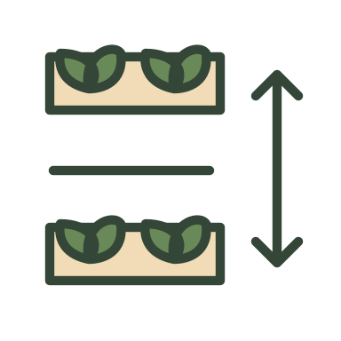
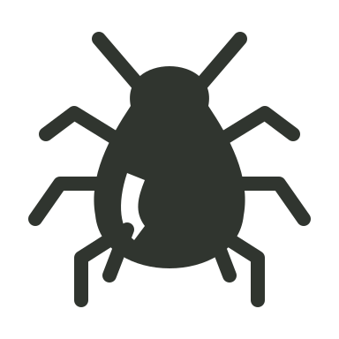
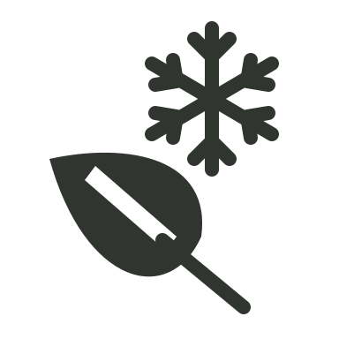
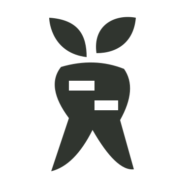
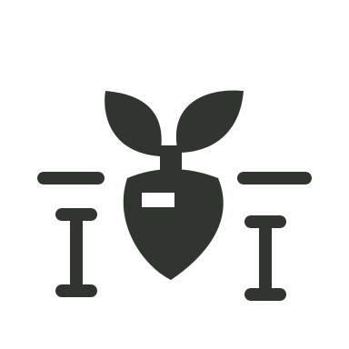
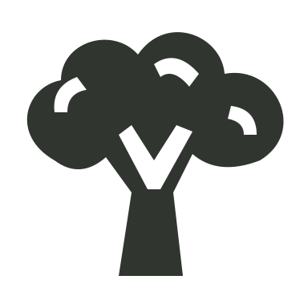
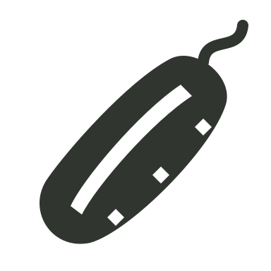

Hackriculture · vegetable print · study 01
One garden. Two icon families.
A small vector pilot for review: eight coloured gardening symbols and seven single-colour risk/crop symbols. All artwork has a transparent background. The checkerboard belongs to this review page, not the image.
Pilot only. The title banners, approved artwork, gardening data and live icon mappings are unchanged. The sample sheets substitute selected symbols only; remaining icons show the existing set.
Everyday growing
Warm, restrained colours; the same drawing style for Quick Facts, Core Needs and Final Tips.
Sowing
A seed packet and falling seeds; sowing rather than transplanting.
 28px32px
34px
28px32px
34pxBetween rows
Two rows viewed from above, with a perpendicular distance arrow.

28px32px
34pxBetween plants
Two individual plants, with a horizontal distance arrow.
28px32px
34px Watering
Watering can with a visible rose and separate drops.
 28px32px
34px
28px32px
34pxFeeding / nutrition
Compost sack with a leaf emblem; shared symbol for the two nutrition labels.
 28px32px
34px
28px32px
34pxSunlight
A clear sun disc, with eight evenly weighted rays.
 28px32px
34px
28px32px
34pxHarvesting
A gathering basket containing fresh leaves and a root.
 28px32px
34px
28px32px
34pxInspect plants
Magnifying glass over a leaf; inspecting rather than covering a crop.
28px32px
34px Risks & crop bubbles
Solid, recognisable shapes with transparent cutouts. Risk colour stays charcoal; crop bubbles retain their category colour.
Try the enlarged monochrome symbols:
Aphids
Pear-shaped body with six legs, antennae and paired rear tubes.

28px32px
34pxFrost
A leaf below a six-point snowflake.

28px32px
34pxForked roots
A root dividing into two substantial tips.

28px32px
34pxSmall roots
A short root and small leaf crown; deliberately not a forked root.

28px32px
34pxMildew
A leaf with visible powdery patches; general mildew pilot, not a diagnostic species claim.
Broccoli
A clustered crown and branching stalk, legible as a small solid mask.

28px32px
34pxCucumber
Long ridged cucumber with a small hooked stem; no tiny horizontal dash.

28px32px
34pxThe 28/32/34px samples match the existing page slots (about 7–9mm at 100% print size). Browser zoom and screen density affect their physical size on screen. SVG masters are editable; PNGs are transparent fixed-colour exports. Monochrome SVGs can be recoloured as masks; multi-colour SVGs use named palette tokens.
On the vegetable sheets
Two crops, each in both units. These are separate two-page pilot PDFs.
BroccoliMetric PDF · Imperial PDF
Includes sowing, spacing, watering, feeding, sun, harvest, frost and the broccoli bubble.Greenhouse cucumberMetric PDF · Imperial PDF
Includes growing needs, spacing, mildew, cucumber bubble and the new leaf-inspection tip.
Review focus
Do the gardening icons feel like one family? Are the small symbols clear enough? Do the solid risk and crop silhouettes have the right amount of detail?
Scope, inventory findings and next steps · Asset manifest